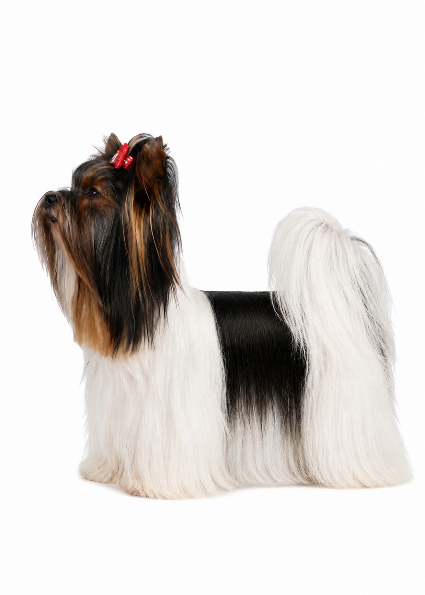

VDH STANDARD št. 990
Spoznajmo Biewer terierja
VDH standard ni namenjen le sodnikom in vzrediteljem – je vodnik za razumevanje pasme.
Na tej strani posamezne dele VDH standarda št. 990 predstavljamo po njegovem uradnem zaporedju ter jih ponazarjamo s fotografijami naših psov.
Tako lahko opis pasme primerjate s konkretnimi primeri iz prakse in bolje razumete, kako posamezne zahteve standarda izgledajo v resničnem življenju.

Marcel X-Men Lavista
Pes, na katerem temelji naša vzreja Biewer terierjev.